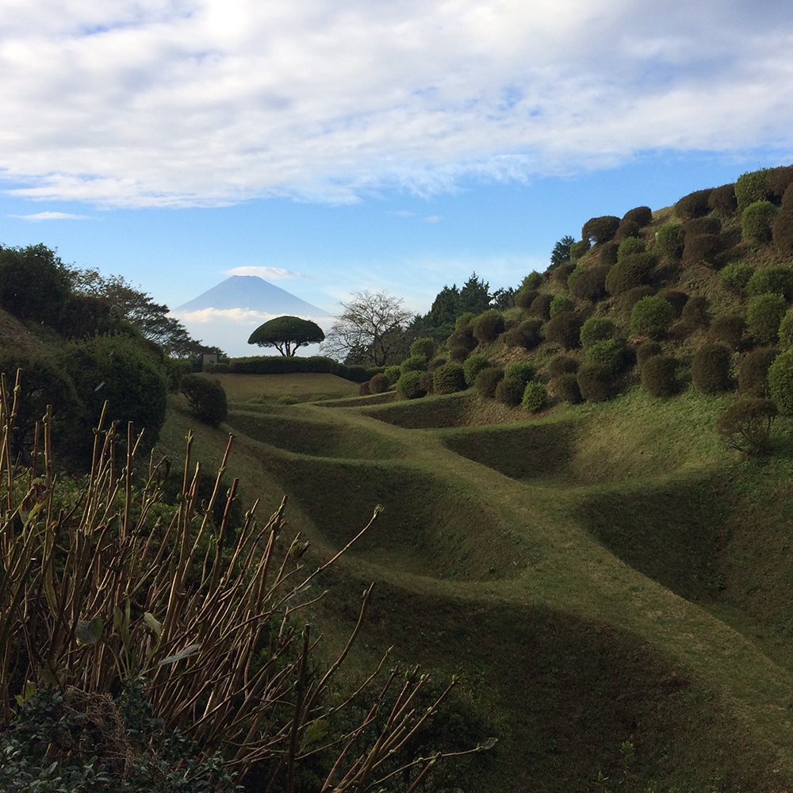

Originally from Connecticut, I've called Japan my home for almost ten years. I've gotten married, become a father, and learned a lot about the world- how similarities in our cultures can unite us and how we can use knowledge from other cultures to improve our own. I'm fascinated with Japanese history- I'm on a personal journey to visit every castle scattered throughout the country and collect all 100 stamps. But also, the Japanese work and social culture has matured me- molded me into someone better.
Japanese culture has made a huge impact on me, and that shines through in my work. For many years, I taught English in Japanese schools, eventually rising to head of the department. In that position, I was tasked with designing the school curriculum, filling it with three years worth of original activities and games. I also had to design hundreds of worksheets for students to practice what they've learned. Targeting sensibilities and learning methods from a new culture has helped me become a more versitile creator.
Now, I'm taking those experiences and applying them to a new field- web design. My skills as a curriculum and worksheet designer have carried over well and allowed me to efficiently plan out and implement CSS elements into my websites. As my self-improvement journey continues, I've also taken to creating video essays about various topics such as game design, tv, and Japanese culture to keep my hands busy as much as possible and keep the creative juices flowing.